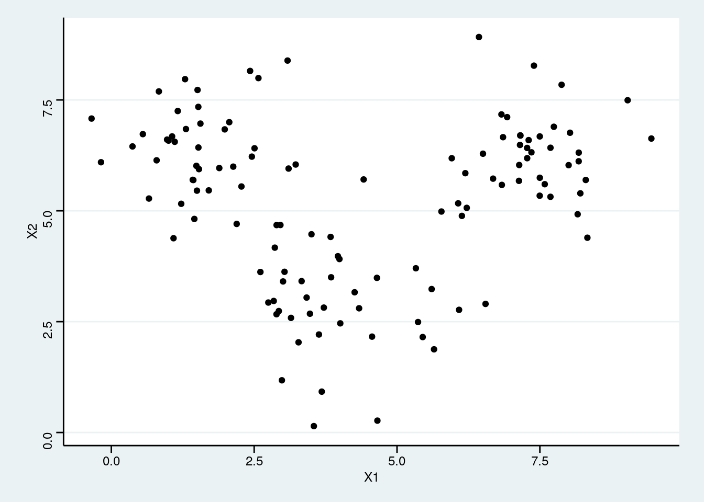
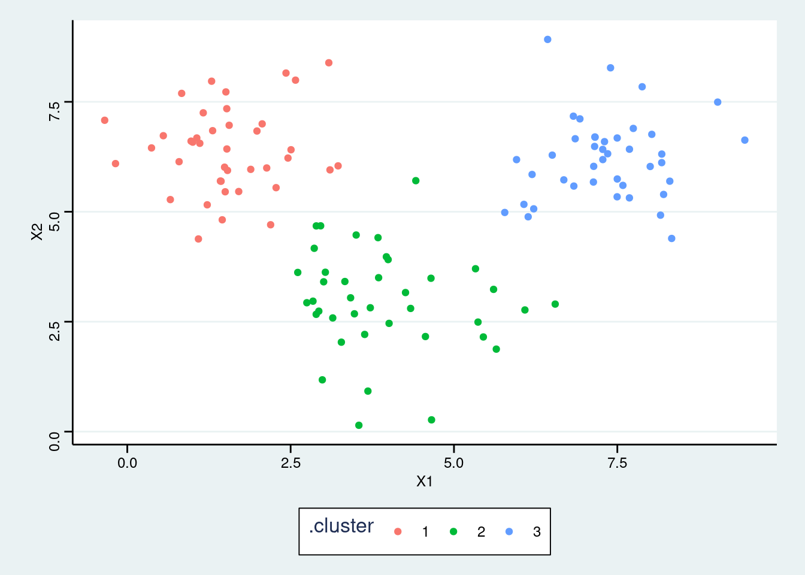
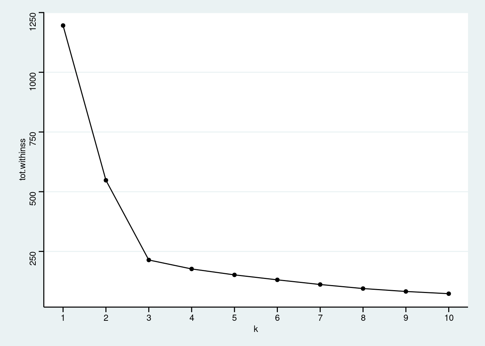
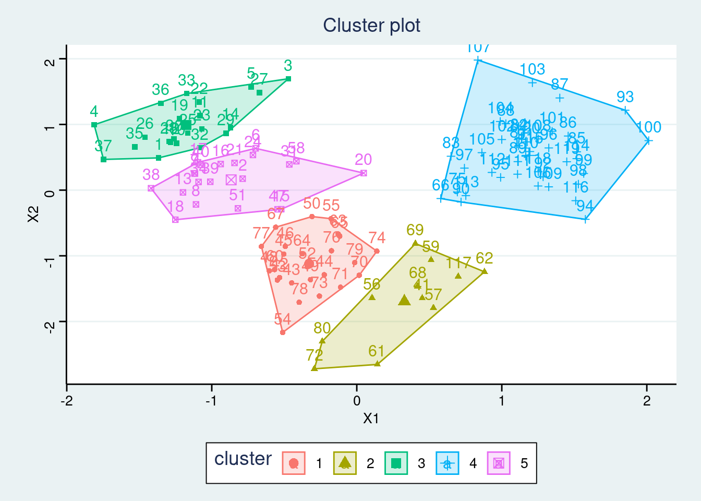
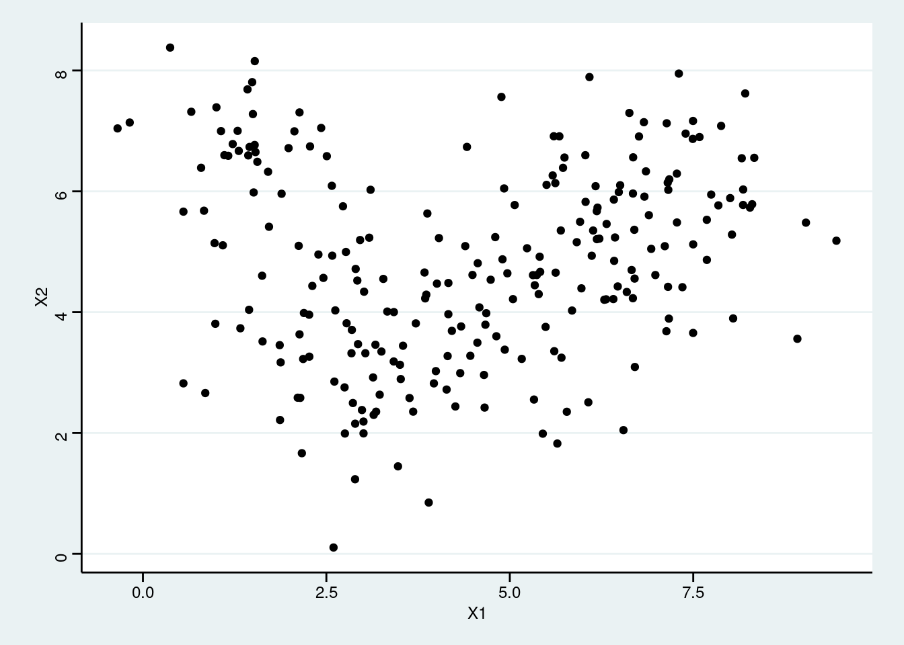

31 Class Activity 25
# load the necessary libraries
library(tidyverse)
library(ggthemes)
library(factoextra)
library(janitor)
library(broom)
select <- dplyr::select
theme_set(theme_stata(base_size = 10))
standardize <- function(x, na.rm = FALSE) {
(x - mean(x, na.rm = na.rm)) / sd(x, na.rm = na.rm)
}31.1 Group Activity 1
Let’s look at the following data tibble that randomly creates some x- and y- coordinates around the cluster centroids that we just saw in class. Please answer the questions based on this data.
set.seed(1234)
my_df <- tibble(
X1 = rnorm(n = 120, mean = rep(c(2, 4, 7.33), each = 40)),
X2 = rnorm(n = 120, mean = rep(c(6.33, 3, 6), each = 40))
)
my_df %>%
ggplot(aes(X1, X2)) +
geom_point() 
- How many clusters can you identify in the data?
Click for answer
Answer: Answers may vary
- Fit
kmeansalgorithm to the data picking the number of clusters you previously identified in parta.
- Add the cluster association to the dataset and make a scatter plot color-coded by the cluster association.
Click for answer
Answer:
augment(res_kmeans, data = my_df) %>%
ggplot(aes(X1, X2, color = .cluster)) +
geom_point()
- Repeat parts
b-cfor identifying more number of clusters than what you picked in part a.
31.2 Group Activity 2
- Aggregate the total within sum of squares for each k to the data table
multi_kmeans.
Click for answer
Answer:
- Make an elbow plot modifying the code below:
Click for answer
Answer:
multi_kmeans %>%
ggplot(aes(k, tot.withinss)) +
geom_point() +
geom_line()+
scale_x_continuous(breaks = 1:15) 
- After picking an optimal number of cluster, use the in-built function in the
factoextrapackage to construct the final cluster plot.
Click for answer
Answer:
set.seed(1234)
kmeans.final <- kmeans(my_df, 5, nstart = 25)
fviz_cluster(kmeans.final, data = my_df, ggtheme = theme_stata())
31.3 (Extra) Group Activity 3
Let’s look at the following data tibble that randomly creates some x- and y- coordinates around the cluster centroids. Now, there are more clusters and the data points are closer to each other. Please repeat the analysis as seen above to find the optimal number of clusters.
set.seed(1234)
my_df <- tibble(
X1 = rnorm(n = 240, mean = rep(c(2, 4, 7.33, 2.5, 5, 6), each = 40)),
X2 = rnorm(n = 240, mean = rep(c(6.33, 3, 6, 3.5, 4.5, 5.5), each = 40))
)
my_df %>%
ggplot(aes(X1, X2)) +
geom_point() 